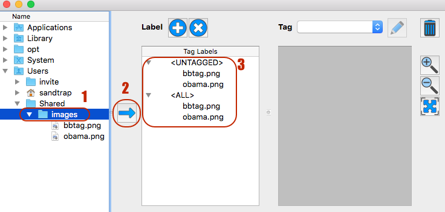
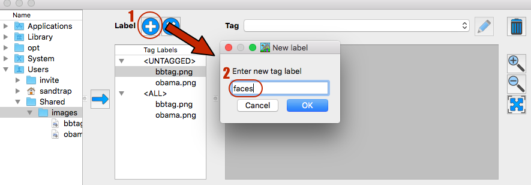
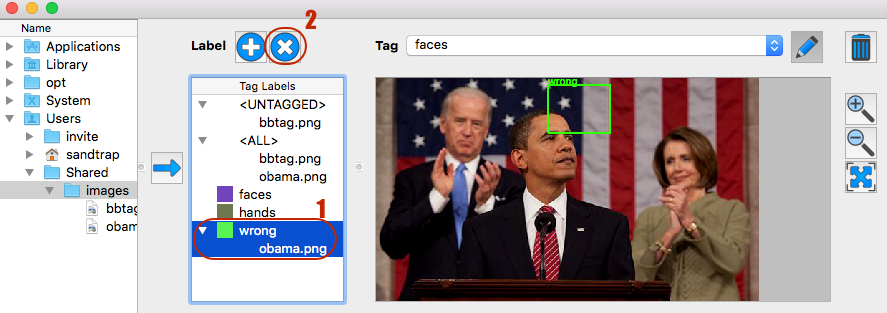
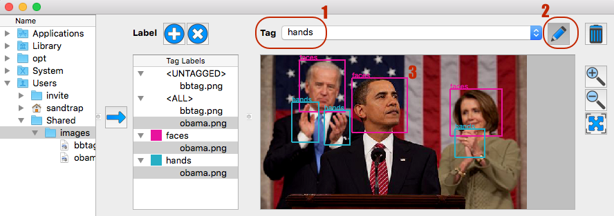
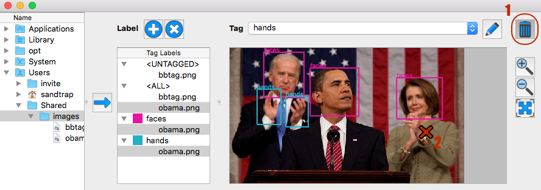
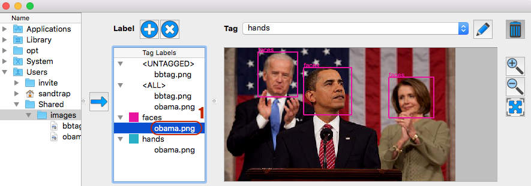
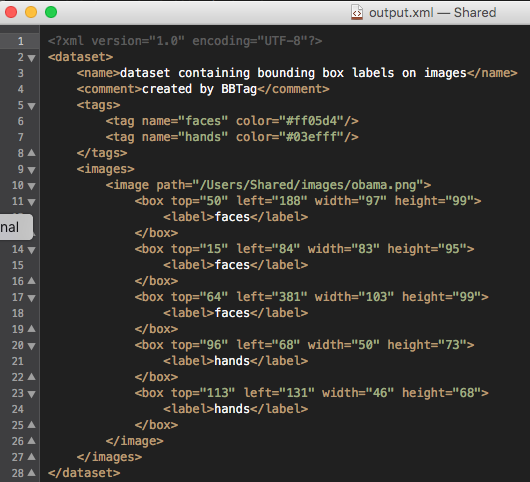
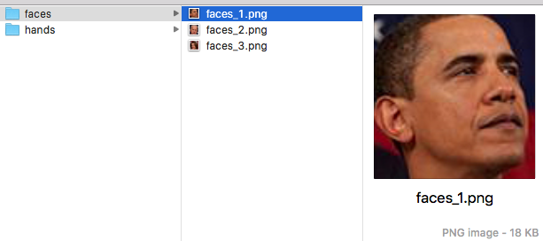

BBTag
Help Document
Table
of Contents
Goal
How to use?
Shortcuts
BBTag is meant to be used for tagging (i-e labeling rectangles) images,
which is a tedious task for people who need to make their own dataset for
supervised machine learning. In a nutshell, the advantages of BBTag are:
- multiple
labeling: each image can be tagged multiple times with
different labels.
- label
organization: a BBTag session is grouped by label. It becomes
very easy to know which labels are present in each image without having
to view the images one by one. An "Untagged" section is also provided by
default to quickly find out which images need to be tagged.
- worry-free
tagging: add and remove tags as needed. If you got a tag wrong,
delete it and tag again without impacting any other tag.
- selective saving: save your
entire BBTag session or just a subset based on image and/or labels. You
can reuse the same pool of images for different purposes (e.g. save only
"faces" and "body", then "person", etc. regardless of the overlap
between each tag).
- XML or image part output:
save your dataset as
- XML file: it will
containing the path to images and label bounding box coordinates. This
file can be directly input in dlib for instance. You may also read the
data with python and appropriate XML package.
- Image part files:
it will output one folder per label. Each label folder will contain
the image part cropped by the bounding boxes for that label. It could
be useful for direct input to train Deep Learning networks for
instance.
How
to use?
- Import images
There are 2 ways to bring images in the BBTag session:
- Load a selection of images through the directory explorer: these
images will be added to the current session (i-e images and tags
already present are left untouched)
- Load a XML file referencing images and tags: if "Open XML" is
chosen, the current session is cleared of existing images and tags
first. If "Open XML and Merge" is chosen, the current session is
left untouched.

- Add/Remove
Labels and/or Tags
You can add as many label as needed by simply clicking on the "+" button
(or using the "+" key as shortcut). By default a random color is picked
for you. To change the color or the name of the label, simply
right-click on it and choose "change color/label" action.

Be careful when removing a label:
all the bounding boxes of all the images belonging to that label will be
removed. To do so, click on the "x" button (or use the "Del" key
shortcut). To remove all the bounding boxes for a specific image, select
only that image under the label (and not the entire label) before
clicking on "x" button. To remove permanently an image from the session,
select it under <ALL>, then click remove.

- Tag/Untag
Images
To add a tag to an image, select the label first in the drop-down menu,
then toggle on the Tag button (or use t-key as shortcut). With the left
mouse button, click and drag over the area to tag. The label-tree will
update automatically so that only the images that have tags appear under
their corresponding label. <UNTAGGED> will list only the images
that have no tag at all, which is very handy as "tag to-do list".

To remove a tag, toggle on the Trash button (or use the d-key) and click
close enough to the rectangle to remove.

- Viewer manipulation
When selecting an image in the label-tree, only the tags corresponding
to that label are shown on the image. This is very useful to filter out
tags belonging to labels you don't want to display and
vice-versa, use multiple selection to show multiple labels. If the image
under <ALL> is selected, all tags are shown. If 0 image or more
than 2 different images are selected, an error message is displayed: it
is not possible to know which image you are trying to look at of course.

Use the zoom-in/zoom-out buttons (or Ctrl + mouse wheels up/down) and
fit-to-view button to adjust the viewer setting.
- Export Tags
There are 2 type of export:
- tags can be saved as XML file (that you can directly import in
dlib): it will contain the path to the image (either absolute or
relative to a directory of your choice).
- tags can be saved as individual cropped images (maybe useful for
direct Deep Learning input?).
You can export the whole BBTag session or only a subset of your choice.
Again this could be very convenient for you to separate your tags in
different sub-datasets.


Shortcuts
| Ctrl + O |
Open
XML File |
| Shift + Ctrl + O |
Open XML File and
Merge with current session |
| Ctrl + S |
Save as XML File |
| Shift + Ctrl + S |
Save Selection as
XML File |
| key_+ |
Add new label |
| Del |
Remove selected
labels and/or images |
| key_t |
Start tagging in
viewer |
| key_d |
Remove tag in
viewer |
| Ctrl + Mouse Wheel Up |
Zoom in |
| Ctrl + Mouse Wheel Down |
Zoom out |
| key_f |
Fit image to View |